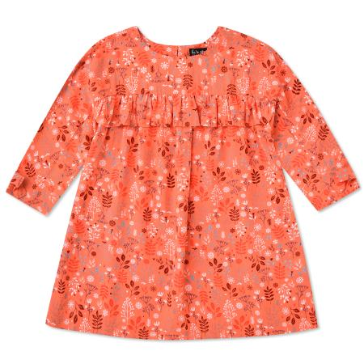

Платье Futurino Fashion коралловое

Стоимость: 899 руб.
Описание товара
Детям от 2 лет до 6 лет
Ультрамягкое коралловое платье Futurino Fashion выполнено из легкой струящейся вискозы.
Модель украшена контрастным принтом с флористическим мотивом.
Характеристики товара
- Код товара: 2037244001sup
- Артикул: Helen 1-s-N2I3
- Бренд: Futurino Fashion
- Страна-производитель: Китай
- Материал: 100% вискоза
- Габариты упаковки: 30 x 5 х 30 см
- Вес упаковки: 0.17 кг.
Подробное описание товара
- Прочная вискоза
- Расклешенный фасон
- Круглый вырез
- Длинные рукава
- На спинке – застежка на пуговицу
- Высокая износостойкость
Обращаем Ваше внимание, что правильное определение размера детской одежды напрямую зависит от индивидуальных особенностей ребёнка.
© Все права защищены